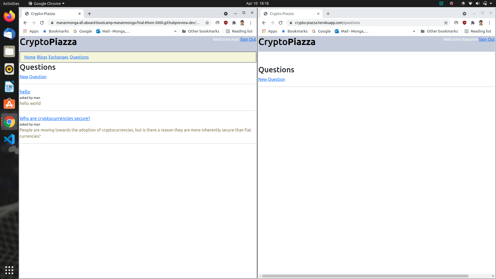

Home Page
Other Posts
Building Crypto-Piazza
In March 2021, I joined the All Aboard Bootcamp hosted by John Crepezzi, Staff Software Engineer at GitHub because I was interested in learning Ruby and Rails, CSS, and JavaScript.
As part of the final project, we had to build a web application on Rails and deploy it to Heroku.
John advised us to build something that would be close to our hearts and we would work on passionately.
I have an avid interest in cryptography, and I researched it during my Master's at BU.
I spent 2 years understanding and assimilating knowledge about cryptography and recently a lot of my friends and acquaintances have asked me to help them understand cryptocurrencies.
Hence, I wanted to build a platform that helps them with this goal. Initially, some of the features I wanted this website to have were:
- A section with a live exchange rate of popular cryptocurrencies to fiat currencies
- A structured explanation of how the underlying technologies of these currencies work, I would like to have these sections populated by blogs, documentation, and articles from the internet that I can curate and also links to blogs I write myself
- Indexing and cross-referencing of all content
- A guide to how people can safely invest in these currencies, so App Store links to DeFi applications like Binance, Gemini
John suggested that I open the application to user contributions as well, and I was inspired by this to create the functionality where users could share their
own blogs and comment on others blogs, while also asking and answering crypto-related questions.
Week 1
I started building out the application on CodeSpaces and making sure my models were correctly assigned. I always like to make small changes and deploy them to check for any errors when I’m building. It’s always the best way to test each new functionality as you go.
We had to deploy our projects on Heroku. Heroku doesn’t use SQLite and I had to learn to use PostgreSQL for building the application. I was curious about the benefits of PostgreSQL so I decided to do some research and some of my findings about PostgreSQL were:
- It is relatively slow at low concurrency levels, but scales well with increasing load levels, while providing enough isolation between concurrent accesses to avoid slowdowns at high write/read ratios
- Exceptional PostGIS extension which allows for geographical functionality
- It has a lot more features which make your DB layer much more customizable, so that you can fine-tune it to any requirements you might have
However, I did run into many errors while migrating my application to Heroku with Postgres. Some of them were:
- I wasn't able to create a database on Heroku and had the following error:
PG::InsufficientPrivilege: ERROR: permission denied to create database
: CREATE DATABASE "crypto-piazza" ENCODING = 'unicode'
To fix this, I had to add CREATEDB permissions for a new user from the psql console as follows
$ sudo -u postgres -i
postgres@host:~$ psql
postgres=# ALTER USER new_user CREATEDB;
-
Another Error I faced with Postgres was
ActiveRecord::StatementInvalid at /users/auth/google_oauth2/callback
PG::UndefinedTable: ERROR: relation "exchanges" does not exist
This was because while I had created the table in local, I had not migrated my schema changes to Heroku. This was solved by running
heroku run rake db:migrate
-
When loading the values for the market caps of cryptocurrencies into the exchanges table, I realized that using the ActiveRecord type integer was not a large enough variable. I had to run a migration to
change integer limit in my table as following and then change the integer limit to 8 bytes instead of the default 4 bytes:
generate migration change_integer_limit_in_your_table
Week 2
After solving all the database and migrations problems with my application, I was ready to start adding functionality and a usable interface to my application.
I added users, sessions, authentications and authorizations. I made the controllers and pages for exchanges, questions, and blogs.
However, to make sure that the application had a consistent look, and was easy to navigate, I wanted to add a header and a navigation bar. I used CSS and added parts to my application.html.erb to ensure that all pages of my application would have a title header,
that also had “Login/Sign Up” and “Sign Out” buttons. I also added a navigation bar below it and styled it with a contrasting color.
The difference it made to the look of my application was impressive and I quickly migrated my changes to Heroku so I could ask for feedback from my friends on how to style it further. However, once I migrated the changes, The navigation bar refused to show up on my Heroku page.

I was confused and asked a question on StackOverflow and also asked John for help. He was confused by it too initially and after going down a few rabbit holes, I ended up on this excellent documentation page by Heroku on Rails Asset pipelines.
The problem was that I had run rake assets:precompile locally and that created a manifest file in my public assets which should not be pushed to Heroku. I removed the file from the git and pushed it to Heroku again and it solved the problem.
In addition to solving this bug, in my 2nd week of building Crypto-Piazza, I was able to:
- Implement the model validations for users and also remove code from my controller to the model objects
- Figure out how to use environment variables with Heroku
- Convert all of my hard-coded routes to route helpers
- Add questions and blogs and also connect them with the active user
Week 3
In my 3rd week of building Crypto-Piazza, I worked on consolidating functionality and adding features that would enhance things I had already built. I achieved this by:
- Adding Answers for Questions and Comments for Blogs and integrating them with the ActiveUser of the page. Unlike Blogs and Questions though, these could be posted without being signed in
- I wanted to populate my landing page with all 3 of the basic feeds from my application, Questions, Blogs, and Exchanges. I set out to do this with XHR calls. However, as I did this, I realized that each page was rendering its own layout. This made the landing page look extremely cluttered and had repetitive buttons. The styling was also carried over from the original, dedicated pages and I was not satisfied with it.
Therefore, I decided to write new actions that populated the landing page, into which I added the line
render :layout => false
-
I then added CSS for the landing page divs and was finally able to achieve the desired effect in time for our final project presentations.
Presentations
It was genuinely moving to see the progress we had all made in the last 7 weeks. Many of the projects made were real, useful applications. We all have John to thank for his guidance and mentorship. I remember emailing him about a bug fix at 1 AM on a Monday night and he replied within minutes, sending me more relevant documentation to deepen my knowledge about Rails and the fundamentals of how I had actually fixed the bug.
I hope to continue working on this project and keep it live at Crypto-Piazza